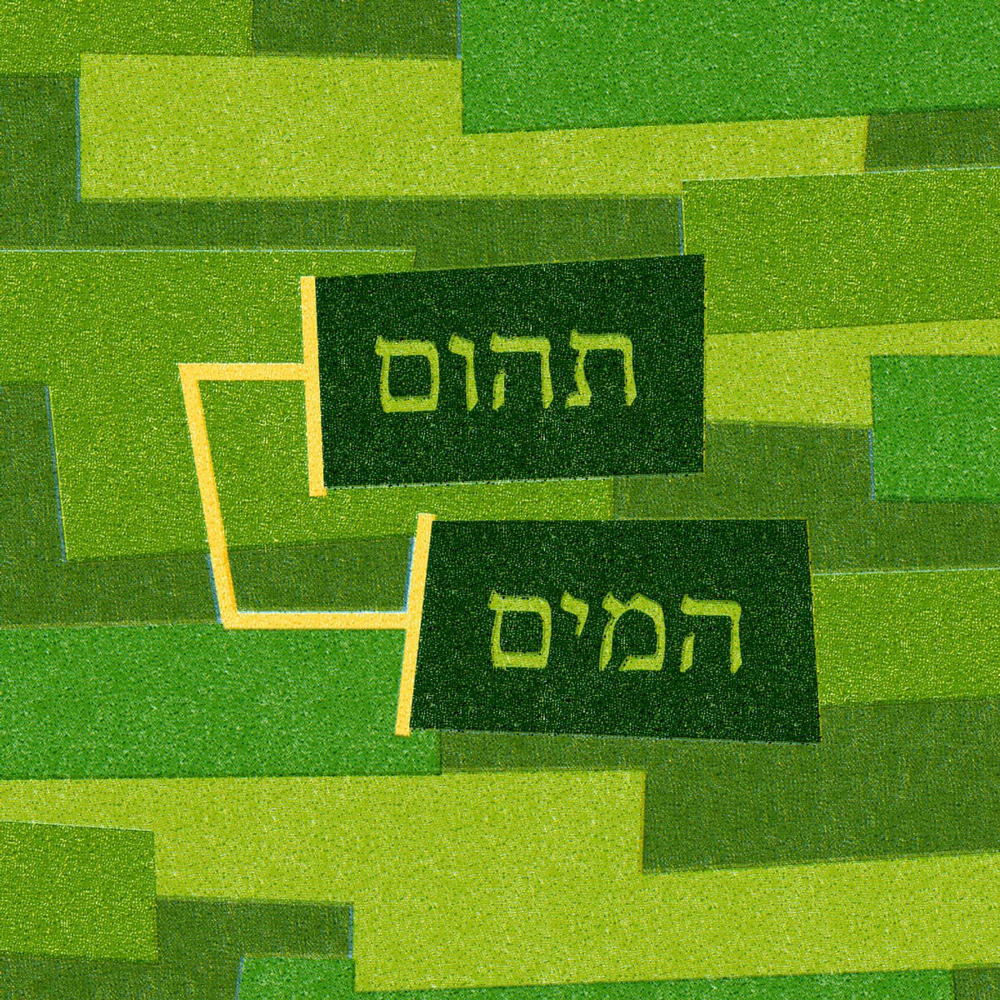

Sessão 12: Imagens de Gênesis 1 no Salmo 104Session 12: Genesis 1 Imagery in Psalm 104
Principais LiçõesKey Takeaways
A criação trata mais de dar ordem, propósito e função do que de origens materiais (veja Sl. 104).Creation is more about giving order, purpose, and function than it is about material origins (see Ps. 104).
No Salmo 104, a criação é um trabalho contínuo de sustentação.In Psalm 104, creation is ongoing, sustaining work.
Criar pode ser usado para descrever o começo, o meio e todo o processo de sustentação.Creating can be used to describe the beginning, the middle, and the whole sustaining process.
Em Gênesis, isso significa que “criou” não precisa necessariamente significar feito do nada. Também poderia significar dar vida e propósito a algo.In Genesis, this means that “created” doesn’t necessarily have to mean made out of nothing. It could also mean giving life and purpose to something.
Explorando Criar no Salmo 104Exploring Creating in Psalm 104
Vamos explorar a conexão com as imagens de Gênesis 1 no Salmo 104, especificamente o conceito de criação. Como o Salmo 104 nos ajuda a entender melhor a criação em Gênesis 1?We’ll explore the connection to Genesis 1 imagery in Psalm 104, specifically the concept of creation. How does Psalm 104 help us to better understand creation in Genesis 1?
O Ruakh em Gênesis 1The Ruakh in Genesis 1
Gênesis 1:2 NASBGenesis 1:2 NASB
A terra era sem forma e vazia, e havia trevas sobre a superfície do abismo, e o Espírito de Deus pairava sobre a superfície das águas.The earth was formless and void, and darkness was over the surface of the deep, and the Spirit of God was moving over the surface of the waters.
Em hebraico, ruakh Elohim significa Espírito de Deus, enquanto ruakh significa fôlego, vento ou espírito. É uma energia invisível trabalhando através de um agente pessoal, impessoal ou desencarnado.In Hebrew, ruakh Elohim means Spirit of God, while ruakh means breath, wind, or spirit. It’s an invisible energy working through a personal, impersonal, or disembodied agent.
O Ruakh no Salmo 104The Ruakh in Psalm 104

Ilustração do Ruakh (Espírito) em ação no Salmo 104.Illustration of the Ruakh (Spirit) at work in Psalm 104.
No Salmo 104, a criação é um trabalho contínuo de sustentação. “Criar” pode ser usado para descrever o começo, o meio e todo o processo de sustentação.In Psalm 104, creation is ongoing, sustaining work. “Creating” can be used to describe the beginning, the middle, and the whole sustaining process.
Pergunta para ReflexãoReflection Question
O que a palavra “criar” significa no Salmo 104? O que isso pode significar para Gênesis 1, onde diz “Deus criou os céus e a terra”?What does the word “create” mean in Psalm 104? What might this mean for Genesis 1, where it says “God created the heavens and the earth”?
Módulo 3: O Design LiterárioModule 3: The Literary Design
de Gênesis 1 SESSÕES 13-15 O design literário e a simetria de Gênesis 1 estão entre os mais requintados daof Genesis 1 SESSIONS 13-15 The literary design and symmetry of Genesis 1 is some of the most exquisite in the